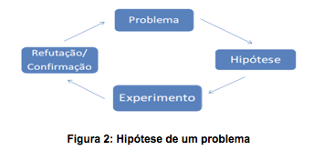

Neste módulo veremos mais sobre projeto de pesquisa científica
O projeto de pesquisa é o planejamento de uma pesquisa, ou seja, a definição dos caminhos para abordar certa realidade.
Deve oferecer respostas do tipo:
EFEITO POSTIT E POSTIT_SCROOL
INÍCIO DO EFEITO:
• O que pesquisar?
• Por que pesquisar? (Justificativa)
• Para que pesquisar? (Objetivos)
• Como pesquisar? (Metodologia)
• Quando pesquisar? (Cronograma)
• Por quem?
FINAL DO EFEITO.
Deve procurar responder: Qual a relevância da pesquisa? Que motivos a justificam? Quais contribuições para a compreensão, intervenção ou solução que a pesquisa apresentará?
Perguntas a si mesmo: o tema é relevante? Por quê? Quais pontos positivos você percebe na abordagem proposta? Que vantagens/benefícios você pressupõe que sua pesquisa irá proporcionar?
Barral (2003, p. 88-89) oferece alguns itens importantes que podem fazer parte de uma boa justificativa. São eles:
Representa o processo teórico de estreitar o foco de investigação e identificar o problema em termos específicos. Curiosidade é um fator determinante para boa formulação de problemas.
Ex.: o que faz com que as raízes de uma planta cresçam para baixo e o seu caule cresça para cima? Que marca de desinfetante bucal mata mais germes?
Ainda, segundo Rudio (apud MINAYO, 1999, a escolha de um problema merece indagações:
EFEITO FLUTUANTE
INÍCIO DO EFEITO:
• Trata-se de um problema original e relevante?
• Ainda que seja “interessante”, é adequado para mim?
• Tenho hoje possibilidades reais para executar tal estudo?
• Existem recursos financeiros para o estudo?
• Há tempo suficiente para investigar tal questão?
FINAL DO EFEITO.
Suposição provisória do pesquisador em relação a um dado problema analisado. Deve ser sempre testada para verificar a validade da explicação proposta (Figura 3), caso não passe nos testes a hipótese deve ser modificada ou refinada.
Hipótese é uma expectativa de resultado a ser encontrada ao longo da pesquisa, categorias ainda não completamente comprovadas empiricamente, ou opiniões vagas oriundas do senso comum que ainda não passaram pelo crivo do exercício científico (BARRETO; HONORATO, 1998).
Embora diversos autores de metodologia da pesquisa jurídica recomendem a elaboração de hipóteses de trabalho, há também os que questionam tal procedimento: “No âmbito do projeto de monografia jurídica, essa exigência parece bastante questionável, entre outras razões pelo estágio de conhecimento do tema em que se encontra o aluno e pela natureza controversa do objeto, que torna improvável a ‘confirmação’ de uma só hipótese.” (VENTURA, 2002, p. 74).
Exemplo: Em todas as constatações de improbidade administrativa o sigilo bancário deve ser quebrado (OLIVEIRA, 2002, p. 219).
Outro exemplo:
Tipos de hipóteses:
Responsável: Professora Nidia Barone
Universidade Federal do Ceará - Instituto UFC Virtual